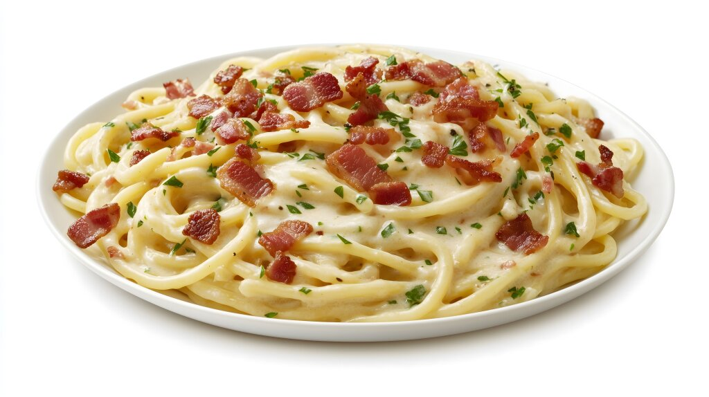

Spaghetti Carbonara

Description
Carbonara is a classic Italian pasta dish from Rome made with eggs, hard cheese, cured pork, and black pepper. It's creamy, rich, and incredibly satisfying without needing any heavy cream.
Ingredients
- Pasta: Spaghetti is the traditional choice, but rigatoni or fettuccine work well too.
- Meat: Guanciale (cured pork jowl) or pancetta are authentic, but bacon is a common substitute.
- Eggs: Fresh eggs create the creamy sauce. You'll need whole eggs and sometimes extra yolks.
- Cheese: Pecorino Romano is traditional, but Parmesan (Parmigiano-Reggiano) is also delicious.
- Black Pepper: Freshly cracked black pepper is essential for cutting through the richness.
- Garlic (Optional): While not traditional, a clove of garlic adds a nice aroma.
Steps
- Boil a large pot of salted water and cook the pasta until al dente.
- Fry the pancetta or bacon in a pan until crisp, then remove from heat.
- Whisk the eggs, cheese, and pepper in a bowl to create the sauce base.
- Toss the hot pasta with the bacon fat, then remove from direct heat.
- Quickly mix in the egg mixture (the residual heat cooks the eggs without scrambling them).
- Serve immediately with extra cheese and pepper.
Home